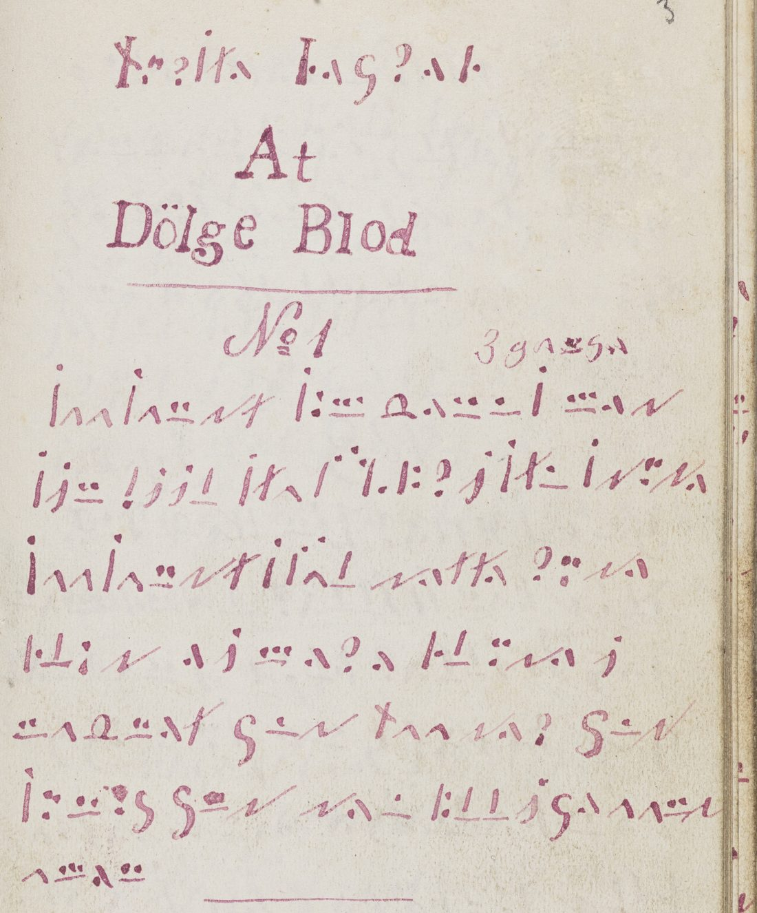
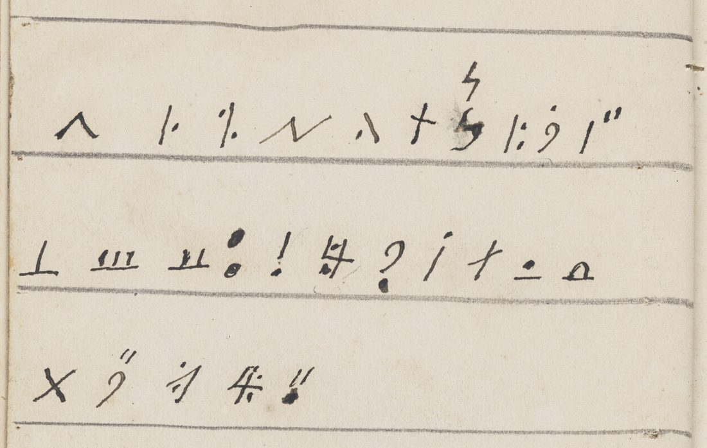
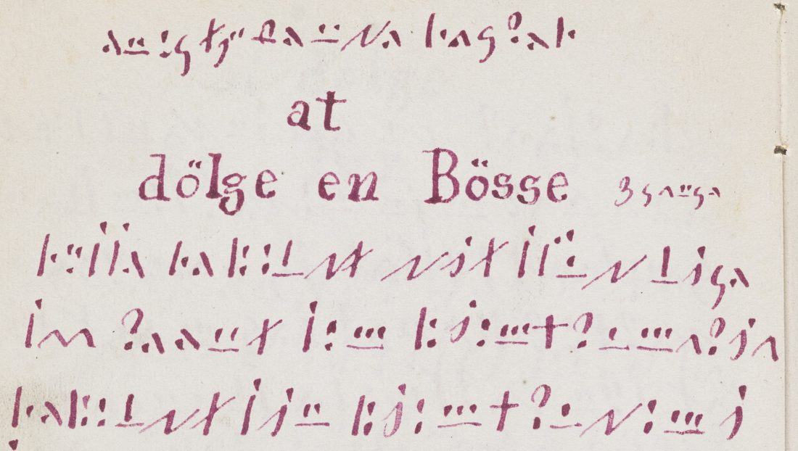

At a glanceCiphertext-only break · partial (90% of the cipher)
- The book
- A Cyprianus, a handbook of charms and cures, written from 1858 by Søren Christensen, “Kloge Søren” (1843–1925), a cunning man of Funen. Almost all of it is in his own cipher, in red ink, under headings in clear Danish.
- Where
- Copenhagen, Det Kgl. Bibliotek, Dansk Folkemindesamling, DFS 1997/020 (Kloge Sørens samling); 109 images on KB Digitale samlinger. Catalogue no. 2525 here.
- The cipher
- A simple substitution, one sign per letter, with the spaces between words kept. The signs are chevrons, bars under one to three dots, strokes with dots, hooks, a cross and an arch. The cross stands for both t and f, the dots for o and ø.
- How it was deciphered
- From guessed formulas (the closing “i Navnet Gud Fader … Amen”) and a blind annealing on the first pages. The key was then frozen and measured once on two held-out images. The writer’s own alphabet table, on image 091, gives the same values.
- How far it is checked
- Twelve of the 148 pages in the contributor’s count were checked word by word on the full-size images. On the two held-out images, 161 of the contributor’s 179 words stood; eight misread words were corrected. The other 136 pages have no sign-by-sign transcription and were not re-read.
- What it says
- About a hundred charms and recipes: to stanch blood, against colic and fever, to protect cattle and butter from witchcraft, to bind a gun, to conjure a fire, and many against thieves. “Gud sætter sin Stav for Flod, han stiller Vand, men jeg stiller Blod.”
- Still open
- Twelve doubtful words on the twelve checked pages; the holes of the other 136 pages, which only the contributor has read; three circular seals in the same signs; a comparison with Ferdinand Ohrt’s unpublished decipherment.
- Credit
- Brice Dudout (Europe chiffrée), with AI agents: transcription, key, the held-out test and the reading of the book (PR #419). Ferdinand Ohrt copied and deciphered the book before, unpublished; his copy was not consulted. The integration check here corrected the held-out pages and re-read the first nine.
01 The book
Søren Christensen (1843–1925), known as Kloge Søren, was a cunning man of Funen. He began this book in 1858, as a boy, and wrote almost all of it in a cipher of his own, in red ink, under headings in clear Danish such as “At Dölge Blod” (to stanch blood). It is one octavo volume, now in the Dansk Folkemindesamling at the Royal Danish Library, which describes it as “Størstedelen i lønskrift” (mostly in secret writing) and has put 109 images of it online, marked free of copyright.
The cipher text runs from the right page of image 003 to the right page of image 079. Images 080 to 093 are blank leaves, pastedowns and binding, except the left page of image 091, which carries a table of the cipher alphabet in the writer’s hand. Two loose leaves carry the same signs: image 098, a charm in two copies, and image 104, a circular seal that is not read. A private piece of the twentieth century, not part of the book, is left out.

02 The cipher and its key
The cipher is a simple substitution: one sign for one letter. The writer kept the spaces between words, and he marks a word broken at the end of a line with a small double stroke. The signs fall into families. A chevron is a and a chevron with a dot is e. A short bar under one, two or three dots is u, n or m. Upright strokes with dots above, beside or below give s, k, h, b and p. Hooks give d, g, r and i or j. A cross is t and also f; an arch on a bar is v; two dots are o or ø. Ligatures and variants met later in the book (aa, tt, nn, mm) are listed in the key file.
The key is also in the book. The left page of image 091 holds 26 signs in three rows, ten, eleven and five, with no letters beside them. Read in alphabetical order they are a to k, l to v, and x y z æ ø, and every value of the recovered key falls at its place in it. By the contributor’s record the table was found during the second session, after the key had been recovered and measured; the three commits of the pull request are from the same evening, so the order of discovery rests on his account. A second form of g is written above the g of the table.

03 How the key was found
Brice Dudout and his agents transcribed the first pages, images 003 right to 007 left, sign by sign from images 4,115 pixels wide: 1,591 signs. No plaintext was at hand. The clear headings give the subject of each charm, not its words. The first values came from guessed probable words: gange after the clear numeral 3, the trinitarian formula that closes each charm, and the ordinals of the cipher headings (Andet, Tredie Begreb). A blind simulated annealing on the same pages, with Danish four-letter statistics and only the space fixed, then reached the same text: by the contributor’s figure, 6 of 10 restarts converged on “saa sandt … dette blod ei mere flyde i navnet gud fader gud søn og gud den hellige aand amen”.
The annealing script is not in the pull request. The verifier’s own crude blind annealer on the same transcription reached 19 of 29 sign values in the best of six restarts. That supports an attack from the cipher text alone; it does not reproduce the “6 of 10”.
04 The held-out test
Before the held-out pages were looked at, the contributor wrote down the test and hashed the protocol, the key, the scorer and the word list. The held-out portion is image 030, with image 031 added by the protocol’s own rule because 030 has fewer than 300 signs: 790 signs, 185 words, transcribed and hashed before any decoding. The measure is lexical cover: the share of signs that fall in words of a Danish word list when the frozen key is applied mechanically to the frozen transcription. The protocol asked for a cover of at least 0.40 and a margin of 0.25 over the best of 200 permuted keys and over the best of 200 shuffles of the signs.
| figure | contributor’s run | verifier’s re-run, own word list |
|---|---|---|
| cover of the held-out portion | 0.4025 | 0.404 |
| best of 200 permuted keys | 0.1089 | 0.157 |
| best of 200 sign shuffles | 0.1038 | 0.117 |
| margin over the permuted keys | 0.294 | 0.247 |
The contributor’s run meets every declared condition, the first one narrowly. The four hashes of the frozen files match, and an independent decoder gives the same decoded line. The scorer and the word list are not in the pull request, so the verifier re-ran the measure with a word list built from the repository’s Danish corpus (25,681 forms). With that list the margin over the best permuted key is 0.247, a hair under the declared 0.25. Both runs are given here. A cover of 0.40 against 0.16 at most is not chance in either. One bias was declared by the contributor: the agent that transcribed the held-out pages already knew the key.
The cover is low for a right key because the frozen transcription is noisy. The verifier compared it with the final reading: 85% of the characters agree, 93% if a and e are merged, and only 49 of 182 reading words equal a mechanically decoded word. Roughly one sign in ten of the held-out transcription is wrong, mostly a missed dot (a for e, b for h) or a misplaced word space.
05 The held-out pages on the image
The contributor read the held-out pages by sense, re-read part of image 031 at full resolution, and put 26 doubtful signs, with two controls, to a blind sheet of sign shapes answered by Brice Dudout himself. He then classed 169 of the 179 words as certain or probable, 94.41%. That figure is his classification of his own reading, not a measured accuracy.
At the integration both images were re-read at full size (8,230 pixels per opening) against the writer’s table. Eight of the 169 words counted as read were misread:
| place | contributor | on the page |
|---|---|---|
| 030 left, lines 2 and 4 | hold[t], holdt | beholdt, twice |
| 030 right, lines 3–4 | for Bøssen dig | for bestan-dig: bestandig, for ever |
| 031 left, line 1 | saae | seer |
| 031 left, line 9 | skal | skeer |
| 031 left, line 4 | paa Verden | one sign, p, before Verden: paa is supplied |
| 031 right, end of the heading | Den som stjæler fra [dig] | Dem som stjæler fra |
So 161 of the 179 words stood as delivered, 89.9%. The check also went the other way. The final a of Maria, counted as restored, is on the page. A word counted as unresolved, “ra”, is not on the page at all. Artila and the unresolved “sia” are one word across a line break, Artilasia. Jomfru and Kirkegaard, which the blind sheet had left unresolved, are written across line breaks with the writer’s hyphen mark and are plain at full size. The unresolved “ssyon” is skjøn, which gives the charm its rhyme. After these corrections the two images hold 176 words: 172 read, one supplied, three doubtful. That count is one reader’s, made with the key and the table in hand. It is not blind and not an independent measurement.

The three charms of image 030, to bind a gun, to release it, and to be proof against shot:
Bøsse, beholdt dit Skud lige saa reent som Jomfru Maria beholdt sin Jomfrudom i sig. I Navnet Gud Fader, Gud Søn og Gud den Hellige Aand. Amen.
Bøsse, forlad dit Skud lige som Samson[d] forlod sin Styrke med mere. I Navnet Gud Fader, Gud Søn og Gud den Hellige Aand. Amen.
Amal, Asmal, Artilasia, dette skal bæres paa Legemet for bestandig.
“Gun, keep your shot just as pure as the Virgin Mary kept her maidenhood in her.” “Gun, let go your shot just as Samson let go his strength, and more.” “Amal, Asmal, Artilasia: this shall be borne on the body for ever.”
Image 031, left page, to conjure a fire:
Jeg seer Iild optændes og i Luften høit at brænde. Jomfru Maria slog sin [?Kabbe] p[aa] Verden. Jeg forbyder at brænde ind, til der findes een[d] Jomfru skjøn som føder een Søn, som aldrig var og aldrig skeer. I Navnet Gud Fader, Gud Søn og Gud den Hellige Aand. Amen.
“I see fire kindled, burning high in the air. The Virgin Mary threw her [?cloak] on the world. I forbid it to burn in, until there is found a fair maid who bears a son who never was and never comes to be.”
The right page of image 031 is a curse on a thief, summarised here without its formula: sawdust from beside the chopping block is taken with three fingers of the right hand in the name of the Trinity, carried to a churchyard and buried in the north corner, on a Thursday evening after sunset, in silence. Two words of it stay doubtful.
06 The first pages
The contributor read the first nine pages (003 right to 008 left) from the lower-resolution images only, classed 385 of their 425 words as read (90.6%), and gave them as a summary with gaps. They were re-read at the integration on the full-size images, and the complete text is in the reading file. Counted with the cipher headings, 437 of 447 words are deciphered, one is supplied and nine are doubtful. The same caveat holds: one reader, with the key. Several words of the contributor’s reading changed: bløde for “flyde”, denne Mand for an unresolved word, svige for a doubtful “værke”, træskelig bedrog for “fræselig bed”.
The book opens with charms to stanch blood:
Saasandt som Venus med sin Piil stak Christus [i] Siden, saasandt skal dette røde Blod ei mere bløde. I Navnet Gud Fader, Gud Søn og Gud den Hellige Aand. Amen.
Gud sætter sin Stav for Flod, han stiller Vand, men jeg stiller Blod.
“As surely as Venus with his arrow pierced Christ in the side, so surely shall this red blood bleed no more.” The name is written v e n u s on the page. “God sets his staff before the flood; he stills water, but I still blood.” Many charms are followed by directions for use in the same cipher:
Naar du vil dølge Blod, da sæt di[n] Finger paa Hullet eller Saaret, medens du fremsiger Ordene de tre benævnte Gange.
“When you want to stanch blood, set your finger on the hole or the wound while you say the words the three named times.” The fifth chapter, against colic, begins: Eva var min Moder, som Slangen træskelig bedrog; de[r]for vover jeg at sønderknuse Slangens Hoved (“Eve was my mother, whom the serpent treacherously deceived; therefore I dare to crush the serpent’s head”).
07 The rest of the book
The other 136 pages (007 right, 008 right to 079 right, and the loose leaf 098) were deciphered by the contributor’s agents at full resolution, straight from the image into letters, one record per page. No sign-by-sign transcription of these pages was made. A second decoder therefore has nothing to decode, and their reading, 7,451 of the book’s words, cannot be re-derived from the files. The contributor classes 95.4% of these words as read, and 95.1% of the whole book, after a second blind sheet on nine chosen signs; he gives the whole-book figure as an indication only, and it is not used as a result here. His weakest pages are 064 left (61.4%, a stained and faded list of conjuration words) and 010 right (77.2%).
Two things are known about these pages from outside. The verifier compared a sample of image 013 with the page, about 75 signs: it decodes by the writer’s table to exactly the claimed text. And on the held-out pages, first read from a lower-resolution transcription, eight words in 169 were wrong. How far that rate carries to pages read at full resolution is not known.
By the contributor’s summary the book holds about a hundred charms and recipes: cures for bleeding, wounds, colic, toothache, fever, chilblains, warts, rickets and consumption, and for childbirth; protection of cattle, horses, poultry, butter and milk against witchcraft; caterpillars, rats and mice summoned to the Thing; dogs and bulls held at bay; guns bound and men made proof against shot; fire conjured, with Mary’s cloak and the SATOR square; winning at cards; and a long series against thieves. The chapters (Begreb) are numbered in cipher from 1 to 23, the 23rd twice. The translation file is a summary table of every charm with a few charms in full; it is not a full translation.
08 Earlier work
This is an independent re-solution: the book had been deciphered before. The contributor found, after his reading, that the inventory of Kloge Søren’s collection made by Gustav Henningsen in 1977 says of this volume “Afskrevet og tydet af Ohrt. = kop 79.4”: copied and deciphered by the folklorist Ferdinand Ohrt (1873–1938). He quotes it from a comment by Hans Nørgaard on fynhistorie.dk (2008). That page answered 403 to our requests, so the quotation was not seen here. Ohrt’s copy was not consulted, and whether he printed any of these charms in Danmarks Trylleformler has not been checked. That question matters: the agents read 136 pages into charm formulas, some of which may be in print. The errors found on image 030 run against memorised formulas, and the sample of image 013 agreed sign by sign.
The same inventory lists other key material in the collection (item 3, a board with a solution of the code; item 47, a leaf with a code and its alphabetical solution), not seen. The existence of the book and of its “kodeskrift” was known (lex.dk; heuschkel.dk reproduces an opening without reading it). The catalogue vetting of 11 November 2026 found nothing on DECODE, in Tomokiyo or in Lasry, and no edition.
09 What remains open
- The 136 unchecked pages. The contributor counts 266 unresolved and 76 restored words in them. Neither the holes nor the words classed as read can be checked from the files.
- Held-out pages, three doubtful words (grade M, uncertain: plain signs but the word not settled): Kabbe on 031 left, written k a b b e, probably Kaabe, cloak; karlegravet and søn on 031 right. One word, paa before Verden, is supplied for a single sign.
- First nine pages, nine doubtful words (grade M): Aanmanden and three words read “saa Blodet staar” on 004 left; vaadne, badne, kølne on 005 right; blødne and vaade on 006 right. Venus on 003 right is what the signs give.
- Shapes flagged by the contributor’s blind sheet K3: a chevron with a foot, a closed loop, a star-like sign, and “fer” or “før” on 033 left.
- The circular seals on 018 right, 019 right and the loose leaf 104, in the same signs written round a circle: not read.
- Prior work on paper: Ohrt’s copy and decipherment at the Dansk Folkemindesamling; Danmarks Trylleformler; B. Rørbye, Kloge folk og skidtfolk (1976); items 3 and 47 of the 1977 inventory. None is online.
- Not repeated here: the contributor’s annealing run and his scorer, which are not in the pull request.
Full texts
The transcription and the decryption of every document on this page, so that the reading can be used and checked. Short files are shown here; all are in the repository.
Kloge Søren's Cyprianus (DFS 1997/020), the charms in cipher, c. 1858 read in part
The working book of a Danish cunning man of Funen: about a hundred charms and recipes against bleeding, wounds, colic, toothache, fever and other ills; protection of cattle, horses, poultry, butter and milk against witchcraft; pests summoned to the Thing; guns bound and men made proof against shot; fire conjured; winning at cards; and a long series against thieves. The translation file is a summary table with a few charms in full. An earlier decipherment by Ferdinand Ohrt is recorded in the archive (not consulted).
Builds coherent sentences, but under the read bar of 95% of words read as sense (90% here); the holes are marked in the reading.
Transcription
# klogesoren1858 - transcription (Kloge Søren's Cyprianus, KB Copenhagen, DFS 1997/020)
# Images: Det Kgl. Bibliotek, Digitale samlinger (object392246), IIIF DFS_1997_020_4_<nnn>; 'left'/'right' = page of the opening.
# Each image sits in its own folder on kb-images.kb.dk (e.g. .../OnlineMasterArkiv/0000/392/278/DFS_1997_020_4_030/); the folder
# numbers are not regular, so take each info.json URL from the HTML of the KB viewer page (integration check, 12 Nov 2026).
# No image or derivative is included in this pull request.
#
# Sign notation (one token = one sign; '/' = visible space between words; one file line = one manuscript line):
# A chevron (a)
# eA dotted chevron (e)
# B1 B2 B3 bar under 1, 2, 3 dots (u n m); B4 bar under 4 dots
# I bare upright stroke; Id stroke with a dot above; Ir stroke followed by a dot (|•); I2 stroke followed by two dots (|:); Ik stroke with two dots above
# i short stroke with a dot above; E stroke with a dot below (!)
# C1 one dot; C2 two dots (:); C4 group of 3-4 dots
# V hook ν (d); T cross (t, f); G long s-hook (g); Gy G with two dots (y)
# J hook ʝ (i/j) without dot; Jd with a dot; Jy with two dots
# Q hook like '?' (r); L upright with foot (l); O arch Ω on a bar (v); K hook like '7' after a dot; Ae dotted X-cross ✱ (æ)
# X illegible or unclassified sign; a trailing '?' marks a doubtful sign (B2?)
## Part 1 - first session, low resolution (4,115 px), training portion: images 003 right to 007 left (1,591 signs)
## These pages were used to find the key. Image 008 left was read at zoom without a sign file (see decryption.txt).
# image 003, right page (p. 3): clear heading "At Dölge Blod", No 1
I A A Id A B2 V T / I C2 B3 / O eA B2 B1 Id B3 eA V
Id Jd B2 / E Jd Jd L / Id T A / I Id C1 I C2 Q Jd Id T B1 / I V B2 eA
Id A A Id A B2 V T / Id Id A L / V eA T T eA / Q C4 / V eA
Ir L i V / C1 I Jd B3 eA Q eA / A Ir L C2 A A / Jd
B2 A O B2 eA T / G B1 V / T A A V eA Q / G B1 V
Id C2 B2 C4 G / G B2 V / V eA B1 / Ir L L Jd G eA / A A B2 V
A B3 eA B2
# No 2; marginal note "3 gange" in cipher = G A B2 G eA
I A A Id A B2 V T / Id C2 B3 / V eA B2 / B2 eA B3 A B2 V
Id T A I / C1 I C1 Ir Q Jd Id T B1 / Id
Jd Id I B2 / Id J V A
# image 004, left page (p. 3v): No 2 continued, then No 3 ("3 gange")
Id A A Id A B2 V T / Id Id A L / V eA T T eA / Ir L C1 V
eA Jd B3 eA Q eA / T L Gy V eA / Jd / B2 A O B2 eA T
G B1 V / T A V eA Q / G B1 V / Id C2 B2 / C1 G
G B1 V / V eA B2 / I2 eA L L / Jd G eA / A A B2 V
A B3 eA B2
# No 3
G B1 V / Id Ae T T eA Q / Id Jd B2 / Id T A O / T C2 Q
T L C2 V / Ir A B2 / Id T Jd L L eA Q / O A B2 V / B3 eA B2
Jd eA G / Id T Jd L L eA Q / Ir L C1 V / Jd B2 A O B2 eA T
G B1 V / T A V eA Q / G B1 V / Id C2 B2 / C1 G G B1 V
V eA B2 / Ir eA L L Jd G eA / A A B1 V C1 / V eA T T eA
Ir L L V / T C2 Q / Ir Jy V / V eA Q / Jd eA G / Id A A A T
# image 004, right page (p. 4): end of No 3; new cipher heading; No 1 (3 gange)
G B1 V / T A V eA Q / G B1 V / Id C2 B2 / C1 G
G B1 V / V eA B2 / I2 eA L L / Jd G eA / A A B2 V
C2 G / V eA T / Id A A Id A B2 V T / C1 G / I A A O J I T
Id C2 B3 / Ir Jd C2 B3 T Q B1 / B3 A Q Jd A / Ir A Q
Jd eA I B1 Id / Ir I2 Q J Id T B1 Id / B1 B2 V eA Q / J Id T
Ir Q Jy Id T / J T Jy Q G eA T / T Jy O A / B1 G eA Q
Jd B2 A O B2 eA T / G B1 V / T A V eA Q / G B1 V
Id C2 B2 / C1 G G B1 V / V eA B2 / I2 eA L L Jd G eA / A A B2 V
A B3 eA B2
# cipher heading: "At / Dølge ..."
V C2 L G eA / A T / I A A Q / T C2 Q / Ir L C1 V C2 G
Ir Jy L L A B2 / B2 I Ik A Ir
A L V Q Jd G / Id Ik A L / V A T T eA / Ir Jy L B2 eA / O L L eA Q
Ir L C2 V A B3 eA Q eA / T C2 Q / Q eA B2 V / Ir Jd C2 B3 T Q B1
B3 A Q Jd A / eA B2 / Ir B1 T / T J L / O A Q V eA B2
# image 005, left page (p. 4v): No 1 continued ("dølge Saar")
Ik B2 B2 eA Q / T L eA Q / Q eA / eA Jd / I2 eA L L eA Q
Id Ik eA L / V A T T eA / Ir Jy L L B2 eA / A L L / Ir L C2 V A
B3 A Q eA / Jd B2 A O B2 eA T / G B1 V / T A V eA Q
G B1 V / Id C2 B2 / C1 G G / G B1 V / V eA B2 / I2 eA L L Jd G eA
A A B2 V / A B3 eA B2
# No 2 (?)
B2 A A Q / V B1 / O Jd L / V C2 L G eA / Ir L C1 V
V A / Id A T / V Jd / T J B2 G eA Q / E A A / I2 B1 L L eA T
eA L L eA Q / Id A A Q eA T / B3 eA V / V eA B2 / Id V eA T Q B3 X
Id J G Q C1 Q / V A B2 / B2 A / V A T Q A A / I2 A eA B2 O B2
T A / G A B2 G A
# image 005, right page (p. 5): cipher heading "Andet Begreb" + clear "At Dölge et Saar for Svig og Bullenskab"; No 1 (3 gange)
A B2 V eA T / Ir eA G Q eA Ir
K I2 Q J Id T B1 Id / T J Ik / eA T / I A A Q / V eA T T eA
Id Ik A L / O A A / V B1 eA / C2 G / Id J Ik A / I2 C1 V B1 A
V A T T A / Id Ik A L / Ir L / B1 A C2 G / Id J Ik A / Ir C2 J G
Jd B2 A O B2 eA T / G B1 V / T A V eA Q / G B1 V
I2 C2 B2 / C2 G / G B1 V / V eA B2 / I2 eA A L L Jd G eA
A A B2 V / A B3 eA B2
# No 2 (3 gange)
V eA T T eA / Id Ik A L / Ir O eA Q / Ik eA B2 / Ir C2 Q B2 eA
eA L L eA Q / Ir O Jd G eA / B2 eA Q A A B2 V
# image 006, left page (p. 5v): No 2 continued; No 3
A V A B3 / I / Id J V eA / V A / G B1 V / T C2 G
Q Jd V Ir A B2 eA T / B1 V / C2 G / Ir Jy G G eA V
eA O A / A T / Jd B2 A O B2 eA T / G B1 V / T A V eA Q
eA Q / G B1 V / I2 C2 B2 / C2 G / G B1 V / V eA B2
I2 eA A L L Jd G eA / A A B2 V / A B3 eA B2
B2 A A Q / V B1 / V C2 L G eA Q / eA T / I A A Q
T C2 Q / Id O Jd G / C1 G / Ir Jy L L eA B2 / Id Ik A Ir / V A
Id T Q A G / B3 A V / V Jd B2 / T Jd B2 G eA Q / C1 B3
Ik Q Jd B2 G / Id A A Q eA T / A T B3 A V eA B2 / Jd V B1
T Q eA B3 Id J G eA Q / Q C1 Q V eA B2 A
# image 006, right page (p. 6): cipher heading "Tredie Begreb" + clear "for Brod og Hevelse"; No 1 (3 gange)
T Q eA V Jd eA / Ir eA G Q eA Ir
T C2 Q / Q Ir Q C2 V
C2 G / G B1 V / L A V / V A T T A / G A A A
A T / J C2 Q V eA B2 / T J L / V eA T / G C2 Q
Jd eA G / A L T B3 eA V / G B1 V I / B3 A G T
C2 G / G B1 V I / Id Q A T T / Jd B2 A O B2 eA T
G B1 V / T A V eA Q / G B1 V / I2 C2 B2 / C2 G
G B1 V / V eA B2 / I2 eA A L L Jd G eA / A A B2 V / A B3 eA B2
# No 2
T C2 Q / I2 A O A L L Jd A
V A T T A / Id A A Q / Id Ik A L / Jd A G / V C1 L G A
V A T T A / Id Ik A L / Ir L C2 V / C1 G / Id J Ik A
Id C1 L B2 eA / V A T / I2 A Q / Ik A L A V / G B1 V
# image 007, left page (p. 6v): No 2 continued; No 3 ("Naar du vil dølge Brod")
Ir J eA L E / Ir C2 Q T / Id O Jd B2 V eA / Ir B3 / V eA G
T C2 Q / Id L A B2 B2 / 24 / Id T / G B1 V / Ir J A L E
Jd B2 A O B2 eA T / G B1 V / T A V eA Q / G B1 V
Id C2 B2 / C2 G / G B1 V / V eA B2 / I2 eA A L L Jd G eA
A A B2 V / A B3 eA B2
B2 A A Q / V B1 / O Jd L / V C2 L G eA / Ir Q C2 V
eA L L eA Q / I2 eA O eA L Id eA / V A / Id T Q C2 G B2 A V
A T / V A T / V A A Q / L Jd G eA / B3 eA V
V Jd B2 eA Ir A B2 / V A Q / B3 eA V eA B2 Id
V B1 T Q eA B3 Id J G eA Q / E Q V eA B2 eA V
T Q A / Ir A B2 / Ae O B2 T A / G A B2 G A / V A T
T A / Id Ik A A Q / eA B2 T A / A B2 / B3 E Q G eA B2
eA L L eA Q / A T T eA B2 / B3 A V eA B2 / Id A T
I2 L eA B2 / eA Q B3 eA V eA Q / Jd C2 Q V eA B2
## Part 2 - held-out portion, images 030 and 031 (791 signs), transcribed after the protocol was frozen and before any decoding
## Frozen files, unchanged: frozen/RESERVE-p030.txt (SHA-256 d56aef4d15a7c728da8a9eea50051dd9d200e6b79995a6fed394635fc0211a5b),
## frozen/RESERVE-p031.txt (SHA-256 d2d935030d2e9fb65ef4e442e8dc68b9ef4c61ef7192ae7d6770b7d37fe07c00). Copy with comments in English:
# HELD-OUT portion: image 030 (left and right pages), transcribed after the protocol was frozen (15:01 CET), before any mechanical decoding
# left page: cipher heading; clear "dölge en Bösse" (3 gange)
eA B2 C2 G T Jy O eA B2 / V A / Ir eA G Q eA Ir
Ir C2 I Id A / Ir A Ik L / V T / V J T / Id Ik B1 V / L Jd G eA
Id A A / Q eA A B2 T / I C2 B3 / Ir Jd C2 B3 T Q B1 / B3 A Q Jd
Ir A Ik L / V T / Id J B2 / Ir Jd C2 B3 T Q B1 / V C2 B2 / Jd
Id J G / Jd B2 A O B2 eA T / G B1 V / T A V eA Q / G B1 V
Id C2 B2 / C1 G / G B1 V / V eA B2 / Ir eA L L Jd G eA / A A B2 V
A B3 eA B2
# clear "löse en Bösse" (3 gange)
Ir C2 I Ik A / T C2 Q L A A V / V J T / I Ik B1 V / L Jd G eA
I C2 B3 / Id A B3 / I C2 B2 V / T C2 Q L C2 V / I J B2 / Id T C2 Q
Ik A / B3 eA V / B3 eA Q eA / Q A / Jd B2 A O B2 eA T / G B1 V
T A V eA Q / G B1 V / Id C2 B2 / C1 G G B1 V / V eA B2
Ir A L L Jd G A / A A B2 V / A B3 eA B2
# right page: clear "at være Skudfrid"
A B3 A L / A Id B3 A L / A Q T J L A
I Jd A / V A T T A / Id Ik A L / Ir Ae Q A I
E A A / L A G eA B3 eA T / T C2 Q / Ir A I T A B2
V Jd G
# HELD-OUT portion (complement): image 031, added because 030 has fewer than 300 signs; transcribed before any mechanical decoding
# left page: cipher heading; clear "at dölge Ild" (3 gange)
T C2 Jd G T Jy O eA A B2 V / Ir eA G Q eA Ir
Jd eA G / Id A eA Q / Jd L V / C2 E T Ae B2 V eA Id
C2 G / Jd L B1 T T A B2 / Ir C2 Jd T / A T / Ir Q Ae B2
V A / Ir J E B3 T Q B1 / B3 A Q Jd A / Id L / C2 G
I J B2 / Id A Ir Ir A / E O A Q V A B2 / Jd A G
T C2 Q / Ir Jy V A Q / A T / Ir Q A B2 V A / Jd B2 V
T J L / V A Q / T Jd B2 V A I / A A B2 V / Ir Jd B3
T Q B1 / I I Jy C2 B2 / I C2 B3 / T C2 V A Q / A A B2
I C2 B2 / I C2 B3 / A L V Q J G / O A Q / C2 G / A L
V Q Jd G / I Ik A A Q / Jd B2 A O B2 eA T / G B1 V
T A V eA Q / G B1 V / Id C2 B2 / C2 G / G B1 V / V eA B2
Ir A L L Jd G A / A A B2 V / A B3 eA B2
# right page: cipher heading; clear "at faae een Tyv til at hensvinde som Duk for Solen og död inden Aaret er omme"
T Q eA Jd G T Jy O A eA B2 V A / Ir A G Q eA Ir
V A B3 / Id C2 B3 / I T J Ae L A Q T Q A
T A G B3 eA V / V Jd B2 A T / T C2 E Id T A / 3 / T Jd B1 G Q A
E A A / V A B2 / Ir C2 J Q A Ir / C1 A A B2 V / A T / V A
Id A B1 G I / E A A B2 A Q / I2 B3 L Jd G G A Q / O A V T
Id T A Ir Ir A B2 / Jd B2 A O B2 eA T / G B1 V / T A V eA Q
G B1 V / Id C2 B2 / C2 G / G B1 V / V eA B2 / Ir A L L Jd G A
A B2 V / C2 G / Ir Ae Q V A / B3 T J L A B2 / Id Jy Q
I Ik G A A Q V / C2 G / B2 A / V G Q A O / V A B3
Jd V A T / B2 E Q V / Jy O A Q / Id T A / Ir J C2 Q B2 A
E A A / V A B2 / Id Jd V I T A / Ik A Q L A G / Q A O A V T
T C2 Q A T A G A / Id A B2 / I C2 B2 / V T T A Q / T C2 Q / Id V A G I A T
T A B2 / A T T A Q / Ir C2 L A B2 / Id B2 / B2 A V G A B2 G / Id T J L T J
A B2 V A
## Part 3 - second session, full resolution (IIIF, 4,115 x 6,804 px per page): image 007 right, 008 right to 079 right, 091 left, 098, 104
## These 136 pages were read sign by sign straight into letters with the validated key (a simple substitution, one letter
## per sign, word spaces visible), so the line-by-line file for them is decryption.txt, Part 3: each line gives the letters,
## and every word whose signs could not be settled is given in sign shapes inside brackets, e.g. [ʝ̇ : B2 ?].
## A separate sign-level transcription of these pages was not made; this is declared in NOTES.md (Remaining gaps).
## Pages without cipher in this range: 046 right, 047 left, 061 right, 062 left, 077 right, 080 left, 080 right, 081 left, 081 right, 082 left, 082 right, 083 left, 083 right, 084 left, 084 right, 085 left, 085 right, 086 left, 086 right, 087 left, 087 right, 088 left, 088 right, 089 left, 089 right, 090 left, 090 right, 091 right, 092 left, 092 right, 093 left, 093 right, 098 right, 104 right.
## Part 2b - integration check of 12 Nov 2026: signs of the held-out images re-read at full size (8,230 x 6,804 px per opening)
## against the writer's table on 091 left. Only the words where the frozen files above are wrong are given; the frozen files
## are not changed (they are the hashed input of the measurement). '-' = the writer's hyphen mark at a line end.
# 030 left, lines 2 and 4, second word: b e h o l d t
Ir eA I2 C2 L V T
# 030 left, line 3, last word: M a r i a (the final a is on the page)
B3 A Q Jd A
# 030 left, second charm, line 3: k e / m e d / m e r e (the frozen file adds "Q A", which is not on the page)
Ik eA / B3 eA V / B3 eA Q eA
# 030 right, lines 1-2: A m a l , A s m a l , A r t i l a - s i a
A B3 A L / A Id B3 A L / A Q T J L A - Id Jd A
# 030 right, lines 3-4: f o r / b e s t a n - d i g
T C2 Q / Ir eA Id T A B2 - V Jd G
# 031 left, line 1, second word: s e e r
Id eA eA Q
# 031 left, lines 6-7: e e n d / J o m - f r u / s k j ø n (the two dots of k stand over the next sign)
eA eA B2 V / Ir Jd C2 B3 - T Q B1 / Id Ik Jd C2 B2
# 031 left, line 9, second word: s k e e r
Id Ik eA eA Q
# 031 right, cipher at the end of the clear heading: d e m / s o m / s t j æ l e r / f r a (as frozen)
# 031 right, lines 5-6 of the text: K i r - k e g aa r d
Ik Jd Q - Ik eA G A A Q VDecryption: decryption.txt
Reading: reading.md
Translation
# klogesoren1858 - English translation (a summary, not a full translation) This file is a summary table of every charm plus full translations of a few of them. Most of the book has no full English translation here. The book holds about a hundred charms and recipes, most in Kloge Søren's cipher under headings in clear Danish. A full translation of 8,055 words would repeat the same frames many times (a sacred precedent, "so surely as ... so surely shall ...", then the closing formula "In the name of God the Father, God the Son and God the Holy Ghost. Amen", and directions for use), so the translation is given as: (1) a summary of every charm in the order of the book; (2) full translations of a few typical charms. Holes as in reading.md: [?word] doubtful, [?] or [...] unresolved. Curses (against thieves and others) are summarised neutrally, without their formulas. "Begreb" (chapter) numbers are those written in cipher; "(7th)" = number inferred from the "No" series under the same heading; "-" = no number read. ## 0. The first nine pages (003 right to 008 left), as re-read at full size on 12 Nov 2026 The rows of the table below for these pages are the contributor's first-session summaries; this is the fuller text. - **003 R, First Begreb, to stanch blood.** No 1: "As surely as Venus [so written] with his arrow pierced Christ in the side, so surely shall this red blood bleed no more. In the name of God the Father, God the Son and God the Holy Ghost. Amen." No 2: "As surely as this man pierced Christ in his side, so surely shall this blood flow no more. In the name of ... Amen." - **004 L-R, No 3.** "God sets his staff before the flood; he stills water, but I still blood. In the name of ... This blood I forbid to run, as surely as [?] rode to the Thing, stopped [...]. In the name of ..., and that as surely and as certainly as the Virgin Mary bore Jesus Christ under her breast for forty weeks. In the name of ... Amen." - **004 R-005 L, to stanch a wound from blood and festering.** "Never shall this fester or bleed more until the Virgin Mary bears a son into the world; never does she bear more sons, nor shall this fester or bleed more. In the name of ... Amen." Directions: "When you want to stanch blood, set your finger on the hole or the wound while you say the words the three named times." - **005 R-006 L, Second Begreb, a wound against smarting and festering.** No 1: "Christ got a wound; this shall [?] and not [?], this shall [?cool] and not smart. In the name of ... Amen." No 2: "This shall neither fester nor smart more than Adam's side when God took out the rib and built Eve from it. In the name of ... Amen." Directions: "When you stanch a wound against smarting and festering, stroke with your finger around the wound while you say the words." - **006 R-007 L, Third Begreb, sting and swelling.** No 1: "O God, let this go to the earth; that I do all with God's might and God's power. In the name of ... Amen." No 2: "This wound shall I stanch; it shall [?soften] and not swell; [...] God help, vanish away like dew before the sun, next to God's help. In the name of ... Amen." Directions: "When you stanch a sting or a swelling, stroke down along the bad place with your hands while you say the words the three named times. This is done either morning or evening, while the sun is down in the earth." - **008 L, Fifth Begreb, colic.** "Eve was my mother, whom the serpent treacherously deceived; therefore I dare to crush the serpent's head. In the name of ... Amen." Directions: "When you want to still colic, stroke with your hand on the belly while you say the words the 3 named times." ## 1. The charms, in the order of the book | n | pages | Begreb | heading (Danish) | what it is for | |---|---|---|---|---| | 1 | 003 R | - | At Dölge Blod, No 1 | to stop blood (Longinus' lance) | | 2 | 003 R-004 L | - | No 2 | to stop blood | | 3 | 004 L-R | - | No 3 | to stop blood (God's staff on the flood; Mary and the forty weeks) | | 4 | 004 R-005 L | 1st | at dølge et Saar for Blod og Bullenskab | a wound, bleeding and swelling (an impossible condition), with directions | | 5 | 005 R-006 L | 2nd (Andet) | at dölge et Saar for Svig og Bullenskab | an infected wound (Adam's side, Eve) | | 6 | 006 R-007 L | 3rd (Tredie) | for Brod og Hevelse | stitch in the side, swelling | | 7 | 007 R | 4th (Fjerde) | for Ledevri og Blodskud | sprain or dislocation, effusion of blood (Jesus rode up on the cross) | | 8 | 008 L | 5th (Femte) | for Kolik eller Bugvrid | colic (Eve and the serpent, Genesis 3:15) | | 9 | 008 R | 6th (Sjette) | for Modersyge | "mother sickness" (uterine pains, hysteria) | | 10-13 | 009 L-010 L | 7th (Syvende) | for Tandpine (No 1 af Orm; No 2-4) | toothache: the tooth worm; an elder twig; the new moon; abscess | | 14-17 | 010 R-011 R | 8th (Ottende) | for Feber (No 1-4) | fever: litany of impossible things (a stork without tongue, a wolf without lung, a falcon without gall); a note thrown into water; elder | | 18-19 | 012 L | 9th (Niende) | for Frost (No 1-2) | chilblains (strawberries) | | 20 | 012 R | 10th (Tiende) | for Barnenød | difficult childbirth | | 21-22 | 012 R-013 L | 11th (Ellefte) | for Vorter og Fregner (No 1-2) | warts and freckles (a slug) | | 23 | 013 R | 12th (Tolvte) | for Kjertelsyge | scrofula, swollen glands | | 24 | 014 L | 13th (Trettende) | for Onde Drömme | bad dreams | | 25 | 014 R | 14th (Fjortende) | mod Troldom: Om naagens Mandom er fortryllet | manhood bewitched | | 26-27 | 014 R-015 R | (14th) | En anden Slags Røgelse mod Troldom; En Røgelse mod onde Vejranstød | fumigations against witchcraft and against "evil airs" | | 28-29 | 015 R-016 R | - | naar der er kast Ledn mellem Ægtefolk; Kjendetegn paa denne Sygdom | married couple set against each other by a spell; signs of that illness | | 30 | 017 L-018 L | - | naar der er kast Urolighed paa smaae Börn | small children made restless by a spell | | 31 | 018 R | - | at forminde alle slags Troldom: en Sedel | a written note against all witchcraft (with a circular seal, not read) | | 32-34 | 019 L-020 L | 15th (Femtende) | mod Troldom hos Kreaturerne (No 1-3) | witchcraft on cattle; protecting tubs and vats; a charm buried at the stable door | | 35-38 | 020 R-022 L | (not read) | naar man ikke kan kjerne Smör (No 1-3, "No 2") | butter that will not come: natural cause; an apothecary's remedy; grave earth, flax, salt, water against the stream; fumigating the milk vessels | | 39-40 | 022 R-023 L | 16th (Sextende) | mod Troldom hos Fjederkræet | witchcraft on poultry; hens that do not lay | | 41 | 023 L | - | mod Uheld | against ill luck (three handfuls of grain) | | 42 | 023 R-024 L | - | At passe Gjæs eller at frie dem fra Rovdyrenes Beskadigelse | keeping geese safe from beasts of prey | | 43-44 | 024 R-025 L | 17th (Syttende) | at forbyde Fuglene at tage Sæden paa Marken | forbidding birds to take the seed (straws laid crosswise, three steps backwards) | | 45 | 025 R-026 L | 18th (Attende) | at stevne Kaaldorme | summoning the cabbage caterpillars to the Thing (dressed, hat off, staff in hand) | | 46-49 | 026 R-028 L | 19th (Nittende) | at stevne / mane / fordrive Rotter og Muus; Urten Hundetunge | rats and mice: summoned, conjured, driven out (MEDARDUS; the herb hound's-tongue) | | 50 | 028 R | 20th (Tyvende) | at dölge en Hund | holding a dog at bay | | 51-52 | 029 L | - | at dölge en Tyr; at löse en Hund eller en Tyr | calming a bull; releasing a dog or a bull | | 53 | 029 R | - | (no heading) | against snakes and venom | | 54 | 030 | 21st | dölge en Bösse; löse en Bösse; at være Skudfrid | binding a gun, releasing it, being proof against shot | | 55 | 031 L | 22nd | at dölge Ild | conjuring a fire (Mary's cloak) | | 56 | 031 R | 23rd | at faae een Tyv til at hensvinde som Duk for Solen og död inden Aaret er omme | a curse on a thief (a ritual with sawdust taken to a churchyard) | | 57 | 032 L-033 L | - | at faae en Tyv til at Staae, eller at sikkre et Sted for Tyverier | making a thief stand still; guarding a place against theft | | 58-59 | 033 R-035 R | - | at slaae det ene Öie ud paa een Tyv; at gjöre een Tyv urolig og bange | curses on a thief (punishment; making him restless and afraid) | | 60-62 | 036 L-046 L | 23rd again (Treogtyvende) | at Wiseigjen (No 1-3) | making a thief bring back what he stole (No 3: the three nails) | | 63-64 | 047 R-048 R | - | at Binde en Tyv; Oblösning | binding a thief; releasing him | | 65-66 | 049 L-051 R | - | mod Hexerie og Forgjörelse hos Mennesker og Dyr; at Trolde og Hexe ikke kan skade Mennesker eller Dyr | against witchcraft on people and animals; protecting house and beasts | | 67-69 | 052 L-055 L | - | Waabenstilling (No 1 en Stridssedel; No 2 Skudfrie og Waabenfrie; No 3 at besværge alt Waaben) | proof against weapons: a battle note; against shot and blade; conjuring all weapons | | 70 | 055 R-056 L | - | for Sygdom i Munden | sickness of mouth and throat (Job) | | 71 | 056 R-057 L | - | for Tandpine | toothache (St Peter by an oak) | | 72 | 057 L-R | - | for Koldfeber | ague (turn your shirt inside out) | | 73 | 057 R-058 L | - | for Gigt | gout, rheumatism (an ointment of black slugs) | | 74 | 058 L | - | at vinde ved Kortspil | winning at cards | | 75-76 | 058 R | - | at stille Blod (OIPMLI); en Konst at slukke Ild (SATOR) | stopping blood with six letters; putting out a fire with the SATOR square on a plate | | 77-78 | 059 L-061 L | - | at Besverge Iild; at Ildebrand ikke kan skade et Hus | conjuring fire; protecting a house from fire | | 79 | 062 R-063 R | - | At ingen kan qryste Dig: Morgen Bøn | a morning prayer for protection through the day | | 80 | 063 R-064 L | - | At prygle een Person hvorlangt han end er borte | beating a person at a distance (a stick cut before sunrise) | | 81 | 064 R | - | for Flugt | "flight" (a sprain or blow) | | 82-83 | 065 L-066 L | - | Naar et Kreatur er forgjort; for Solskud | a beast bewitched; "sun-shot" | | 84 | 066 R-067 L | - | Naar nogen tager anden Mands Næring og Bjering | when someone takes another man's livelihood and harvest | | 85-86 | 067 R-069 L | - | Naar en Hest ikke kan trives; at tage Spat af en Hest | a horse that does not thrive; spavin | | 87-90 | 069 R-071 L | - | At dölge Skarn; at stille Blod og Bulen skab; at dølge Tandpine; at dølge Brod | against [?malice]; blood and swelling; toothache; stitch | | 91 | 071 R | - | For Modersyge | "mother sickness" again | | 92 | 072 L-073 L | - | at nedsette for Skarns Folk | an amulet against wicked people (Lilith) | | 93 | 073 R-074 R | - | For den engelske Syge | rickets | | 94 | 074 R-075 R | - | Om nogen pisser i Senge og ikke kan ligge tør om Natten | bed-wetting | | 95 | 076 L-R | - | For Svindsot: Hos Mennesker | consumption | | 96-97 | 078 L-R | - | (no heading) "Krist rider til Tinge"; "Kors ... Jesus" | two formulas; the second protects cattle from spirits | | 98 | 079 L-R | - | Naar man ikke kan kjerne Smør | butter bewitched (rowan) | | 99 | 098 (loose leaf) | - | (no heading) | forbidding cows to cast their calves (two copies) | | - | 091 L | - | (table) | the writer's own table of the cipher alphabet | | - | 104 (loose leaf) | - | (seal) | circular seal in the same signs, not read | ## 2. Some charms in full **003 R, At Dölge Blod, No 1 (to stop blood).** "As surely as [?Venus, for Longinus] with his spear pierced [?Jesus] Christ in the side, so surely shall this red blood flow no more. In the name of God the Father, God the Son and God the Holy Ghost. Amen." Three times. **004 L-R, No 3.** "God sets his staff against the flood, he stills the water, but I still the blood. In the name of ... This blood I forbid, so that [...]. And that as surely and as certainly as the Virgin Mary bore Jesus Christ under her breast for forty weeks. In the name of ... Amen." **008 L, Fifth Begreb, for colic.** "Eve was my mother, whom the serpent [?cruelly] bit, and [?] I [promise] to crush the serpent's head. In the name of ... Amen." No 2: "When you will still colic, stroke the belly with your hand while you say the words three named times." **009 L, Seventh Begreb, for toothache, No 1, of the worm.** "O you worm that eat this person's flesh and drink this person's blood: as surely as the Virgin Mary was a pure maid, so surely shall you die this night. In the name of ..." These words are written on a note and hung [?] on the breast of the sufferer. **021 L, No 2, against a spell on the butter.** Against a kind of witchcraft by which one cannot churn butter and the cream will not [?come] either, because witch-folk have taken it by their art: buy at the apothecary's devil's dung (asafoetida) 8 skilling, castoreum 1 ounce, musk 1 ounce, black cumin 8 skilling, cumin 4 skilling, long pepper 8 skilling, [?] 8 skilling, amber 4 skilling; put it in 9 pægl of brandy and give it three Thursday evenings in a row after sunset, so that each [?head of cattle] gets half a pægl each of the three evenings, in silence. **030, 21st Begreb, the gun.** "Gun, keep your shot just as pure as the Virgin Mary kept her maidenhood in her. In the name of ... Amen." To release it: "Gun, let go your shot just as Samson let go his strength, and more. In the name of ... Amen." To be proof against shot: the words "Amal, Asmal, Artilasia"; "this shall be borne on the body for ever". (Corrected at the integration check of 12 Nov 2026: "beholdt", kept, twice; "Artilasia" one word; "for bestandig", for ever, where the first reading had "against the gun".) **031 L, 22nd Begreb, to conjure a fire.** "I see fire kindled, burning high in the air. The Virgin Mary threw her [?cloak] on the world. I forbid it to burn in, until there is found a fair maid who bears a son who never was and never comes to be. In the name of ... Amen." (Three times. Corrected at the integration check: "seer", see; "skjøn", fair; "skeer", happens.) **031 R, 23rd Begreb.** A curse meant to make a thief waste away "like dew before the sun" within the year (the heading ends, in cipher, "those who steal from"): sawdust from beside the chopping block is taken with three fingers of the right hand in the name of the Trinity, carried to a churchyard and buried in the north corner [?of the last grave], [?] on a Thursday evening after sunset, in silence. **045 L-046 L, No 3, the three nails.** A ritual to make a thief bring back stolen goods: before sunrise, at a pear tree, three unused nails (from a coffin or a horseshoe) are held towards the rising sun while a formula is spoken that drives each nail, in words, into the thief, comparing his pains to those of Judas and Pilate, until he brings the goods back to their place. **058 R, to put out a fire.** "When one writes these letters [SATOR AREPO OPERA ROTAS] on each side of a plate and throws it into the fire, it goes out at once." **098 (loose leaf).** "In the name of the Father, the Son and the Holy Ghost I forbid [?] [?] heifers to cast their calves."
Key: key.tsv
10 Sources
- Copenhagen, Det Kgl. Bibliotek, Dansk Folkemindesamling, DFS 1997/020 (Kloge Sørens samling): KB Digitale samlinger, object 392246, 109 images, marked free of copyright. Used here: images 003 to 008, 030, 031 and 091 at full size. Each image has its own folder on the image server; the addresses are in the HTML of the viewer page.
- Brice Dudout, pull request #419 (11 November 2026): transcription, key, frozen protocol and measurement, blind sheets, reading and summary translation.
- Gustav Henningsen’s inventory of the collection (1977), as quoted by Hans Nørgaard, comment of 6 November 2008 at fynhistorie.dk/node/16123; cited from the contributor’s notes, not seen here.
- F. Ohrt, Danmarks Trylleformler I–II (1917–1921), for the charm types; not compared with this text.
Folder: targets/klogesoren1858/ (notes with the integration check, key, frozen test, transcription of the training and held-out pages, line-by-line decryption, reading and summary translation).
Cite this page
Brice Dudout and Daniel Bourdeau, “Kloge Søren’s Cyprianus, a book of charms in his own cipher, c. 1858”, Cyphersolver, posted 12 November 2026, https://cyphersolver.com/klogesoren1858.html.